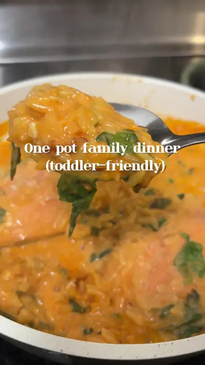

The one-pot dinner I make when I’m exhausted

Ingredients
- Butter
- 1 small onion, diced
- 2 garlic cloves, minced
- ½ can tomato sauce
- 8 oz orzo
- 16 oz water
- Handful baby spinach, chopped
- 2 salmon filets
- ¼ cup heavy cream
- Salt & pepper
- Paprika
- Garlic powder .Oregano
Steps
- Sauté onion and garlic in butter.
- Add tomato sauce, orzo, and water.
- Lower the heat and let the orzo cook on low, stirring occasionally so it doesn’t stick.
- When the orzo is halfway cooked, add the salmon filets on top, season with salt, pepper, paprika, and garlic powder.
- Cover and continue cooking until the orzo is tender and the salmon is fully cooked.
- Stir in spinach and heavy cream at the end until wilted and creamy.
Recipe text as written by @soniamazri on TikTok. Open original